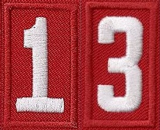
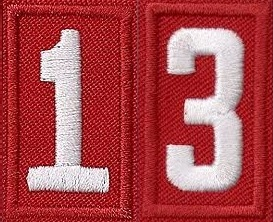

 
Who Runs the Pack?
Pack Committee
The pack committee is the overall governing body of the pack and is responsible to the chartered organization. Led by the pack committee chair, the committee oversees pack finances, advancement, membership, adult training, leader recruitment, and other administrative tasks.
Commmittee Chair: Colin Lemon
Cubmaster
The cubmaster is responsible for the pack's quality program and leads the monthly pack meeting. The cubmaster works under the approval of the pack committee and oversees the assistant cubmaster, den leaders, and assistant den leaders.
Cubmaster: Lysette Derr
Den Leaders
The den leaders are the adults who lead the Cub Scouts in their weekly den meetings. They are responsible for working directly with the Cub Scouts to progress towards their rank and other advancement, and communicate with parents on the Scouts' progress.
How Are Leaders Selected?
Adult leaders must be at least 21 years old for primary leadership positions. Assistant leaders can be 18 years old. All adults must fill out a BSA adult application and consent to a background check. The adult must also complete Youth Protection training. After the pack's chartered organization has approved the adult and the BSA has conducted a national background check, the adult is registered.
Do Leaders Get Trained?
In addition to the Youth Protection training that prospective leaders must complete, registered leaders should take the training specific to their position and program. Leaders can find the list of training modules by clicking here.